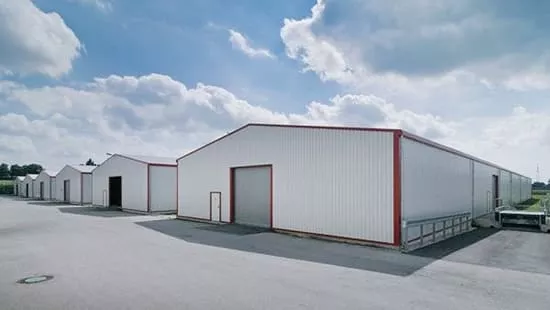
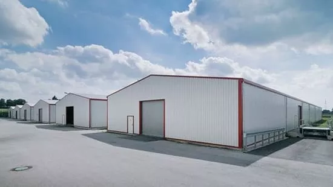

ساتر حديد
سواتر حديد قوية ومتينة توفر حماية وخصوصية عالية.مميزات السواتر الحديد تُعد السواتر الحديدية من أفضل الحلول لتأمين الخصوصية والحماية للمنازل، المدارس، المنشآت التجارية، والمباني المختلفة. إليك أبرز مميزاتها: صلابة وقوة تحمل عالية: مصنوعة من الحديد المجلفن المقاوم للصدأ، مما يضمن متانة تدوم لسنوات طويلة. حماية وأمان: توفر مستوى عالٍ من الأمان، مما يجعلها مثالية لحماية الممتلكات من التعديات أو الاختراقات. تصاميم متنوعة: يمكن تنفيذها بأشكال هندسية أو زخرفية تناسب الديكورات الحديثة والكلاسيكية. مقاومة للعوامل الجوية: مطلية بمواد مقاومة للصدأ والتآكل، مما يجعلها تتحمل الرطوبة، الشمس، والأمطار دون تلف. توفر الخصوصية الكاملة: تحجب الرؤية وتمنح الشعور بالأمان في المساحات السكنية والتجارية. سهولة الصيانة: تحتاج إلى صيانة بسيطة مثل إعادة الطلاء أو التنظيف الدوري للحفاظ على مظهرها. إمكانية الطلاء بألوان متعددة: تتوفر بألوان مختلفة تناسب الأذواق والديكورات الخارجية. تكلفة اقتصادية مقارنة بالمواد الأخرى: توفر حلاً فعالًا من حيث التكلفة مقابل الجودة العالية والعمر الافتراضي الطويل. سهولة التركيب والتصميم المرن: يمكن تصنيعها بأحجام وأشكال مختلفة لتناسب الاحتياجات المختلفة. السواتر الحديدية خيار مثالي لمن يبحث عن الأمان، الخصوصية، والمتانة في آنٍ واحد!


ساتر قماش
مميزات السواتر القماشية تُعد السواتر القماشية خيارًا عمليًا وأنيقًا لحجب الرؤية وتوفير الحماية في المنازل، الحدائق، المدارس، والمنشآت التجارية. إليك أبرز مميزاتها: خصوصية عالية: توفر حجبًا كاملًا للرؤية، مما يمنح راحة وأمانًا أكبر. حماية من الشمس والعوامل الجوية: مصنوعة من أقمشة متينة مقاومة لأشعة الشمس والمطر، مثل PVC والبولي إيثيلين. خفيفة الوزن وسهلة التركيب: مقارنة بالسواتر الحديدية أو الخشبية، فهي أقل وزنًا وأسهل في التركيب والفك. تصاميم وألوان متنوعة: متوفرة بألوان مختلفة تناسب جميع الديكورات والأذواق. مقاومة للصدأ والتآكل: بفضل المواد غير المعدنية، لا تتعرض للتآكل أو الصدأ مع مرور الوقت. تكلفة اقتصادية: تعد خيارًا منخفض التكلفة مقارنة بالسواتر المصنوعة من الحديد أو الخشب، مع توفير جودة ممتازة. مرونة في الاستخدام: يمكن استخدامها كسواتر للمنازل، مواقف السيارات، الحدائق، والمباني التجارية. سهولة الصيانة والتنظيف: تحتاج إلى صيانة بسيطة ويمكن تنظيفها بسهولة بالماء والصابون. إمكانية التفصيل حسب الطلب: يمكن تصنيعها بأحجام وأشكال مختلفة وفقًا لاحتياجات المكان. السواتر القماشية توفر مزيجًا من الخصوصية، الحماية، والتصميم الجذاب، مما يجعلها خيارًا مثاليًا للمساحات الخارجية!
 


هناجر
جودة المواد: نستخدم أجود أنواع الحديد والمواد المقاومة للعوامل الجوية لضمان قوة الهيكل وطول عمره الافتراضي. احترافية التنفيذ: يعمل فريقنا من الحدادين المهرة وفق أعلى معايير الدقة والالتزام بالمواصفات المطلوبة. الضمان والثقة: نقدم ضمانًا على جميع أعمالنا، مما يعكس ثقتنا الكبيرة بجودة تنفيذنا وموادنا المستخدمة. التصميم حسب الطلب: نوفر تصاميم مخصصة تناسب احتياجات العملاء، سواء للهناجر الصناعية أو التجارية أو الزراعية.
الابواب
الأمان العالي: بفضل متانتها وقوتها، توفر الأبواب الحديدية حماية فائقة ضد السرقة والاقتحام. المتانة وطول العمر: تتحمل العوامل الجوية المختلفة مثل الرطوبة والحرارة، مما يجعلها تدوم لفترات طويلة دون تلف. التصاميم المتنوعة: تتوفر بأشكال ونقوش مميزة تناسب جميع الأذواق، سواء الكلاسيكية أو الحديثة. سهولة الصيانة: يمكن إعادة طلائها أو تجديدها بسهولة، مما يحافظ على مظهرها الأنيق لسنوات.